Scaling machine vision for environmental monitoring
From Foundation Models to Label-Efficient Learning; MVEO workshop 2026
Olof Mogren, RISE Research Institutes of Sweden
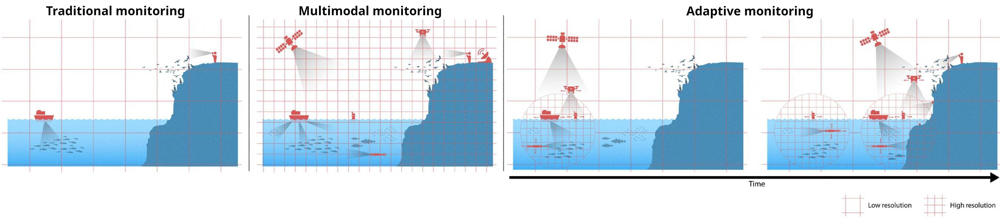
From adaptive to automated ecosystem management
- Traditional ecosystem management: monitor → model → decide → act → repeat.
- Systems under rapid change: data-to-decision lag!
- Needed: autonomous sensing with fast and precise automated analytics
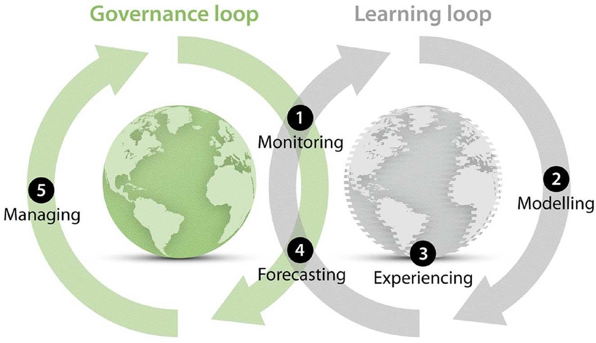
Bottlenecks in automated ecosystem management
- Autonomous sensors generate massive data streams
- Need scalable, reliable models (SDMs, large-scale EO products)
- Expert annotations are scarce and expensive
- Need label-efficient ML (sparse/weak labels, privileged info, active learning, zero-shot models)

Foundation models for species distribution
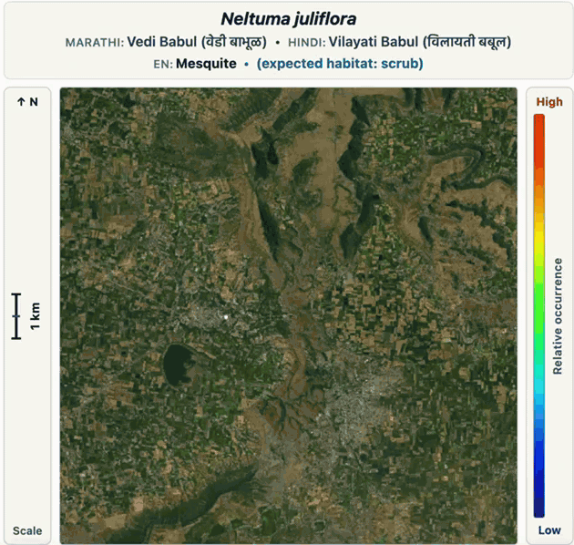
Planetary SDMs with satellite embeddings
- OCELOT
- From regional to global
- Training on ~2 billion GBIF records across 100,000 taxa
- High-resolution global maps (10 m habitat suitability from satellite embedding)
- Downstream priors for camera traps and acoustic sensors
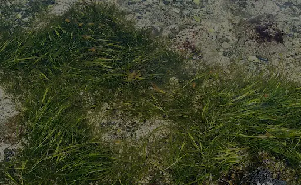
From 10m to 6cm resolution
- Eelgrass
- Marker species for coastal ecosystem health
- Nutrient pollution sensitiveness
- Sedimentation sensitiveness
- Temperature sensitiveness
- Foundation species
- Erosion protection
- Carbon sequestration
Drone data for seafloor analysis
- Orthomosaics from drone footage
- Collected yearly since 2017
-
Sensitive to weather, reflections, light, depth
-
Current practice: semi-automatic analysis using ArcGIS
- Collaboration between Gothenburg University and the County administrative boards in Västernorrland and Västra Götaland

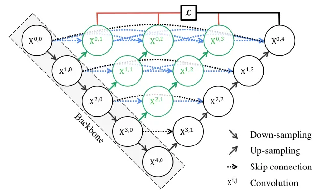
Semantic segmentation without masks
- Semantic segmentation
- U-net architecture
- Supervision
- Point-based high-quality annotations
- Geospatial low-information annotations
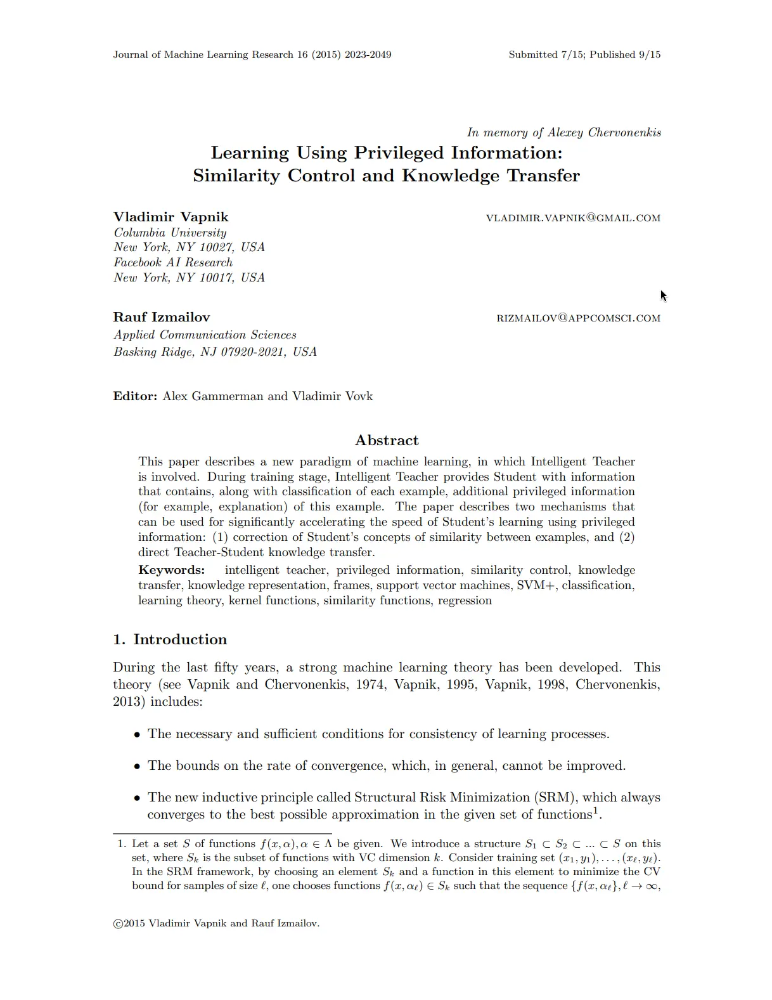
Learning using privileged information
- Point-based readings
- Low noise
- Depth
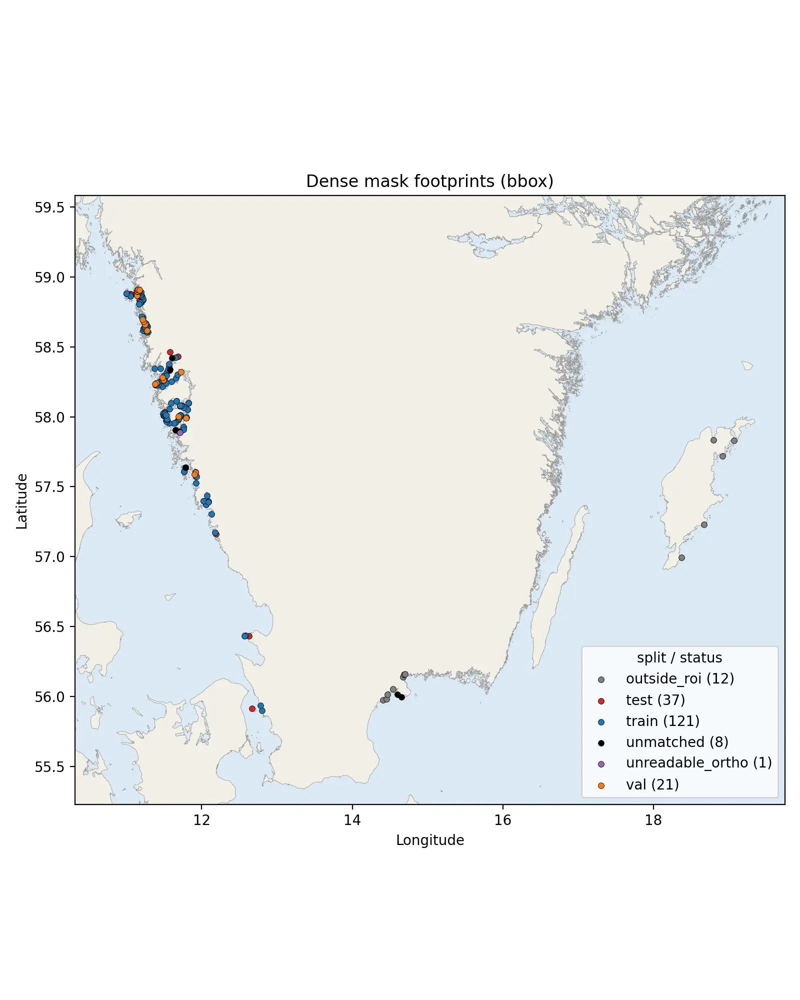
Data collection and ground truthing
- Drop cameras
- Manual inspection

Active annotation, audio and video
Accuracy of a one-dimensional annotation
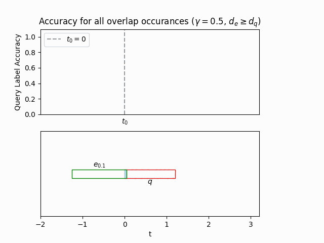
Accuracy of a one-dimensional annotation
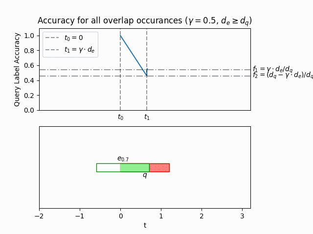
Accuracy of a one-dimensional annotation
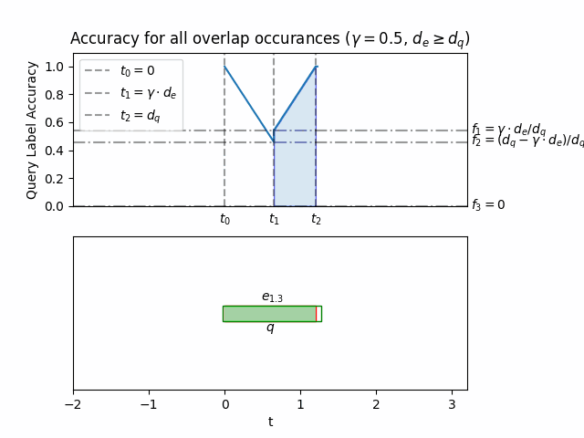
Accuracy of a one-dimensional annotation
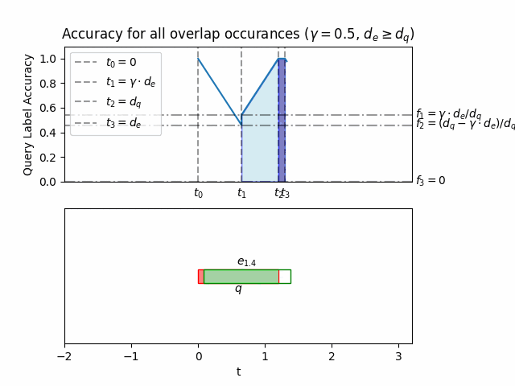
Accuracy of a one-dimensional annotation
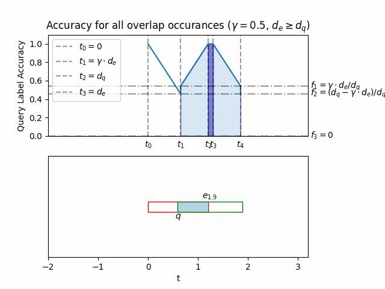
Accuracy of a one-dimensional annotation

From weak to strong annotations
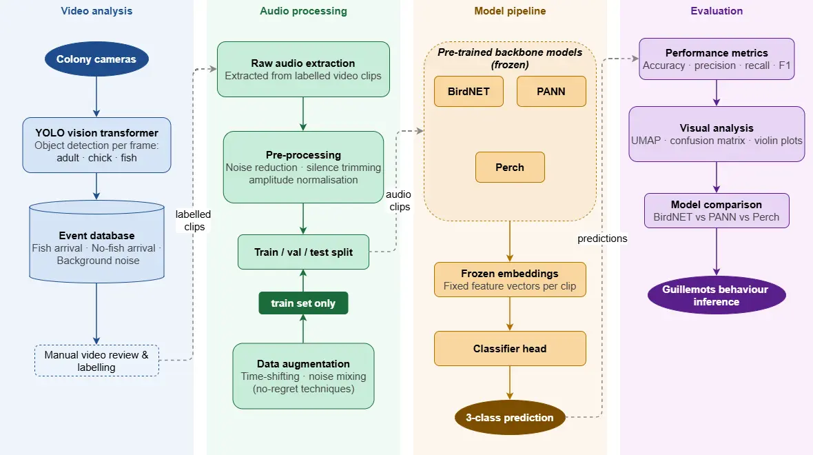
Cross-modal supervision: video-guided machine listening
- Work-in-progress
- Behavior detection using YOLO
- Prey arrivals
- Empty arrivals
- Frozen bioacoustic embeddings
- 30 second clips
- Model specific slices
- Mean+stdev pooling
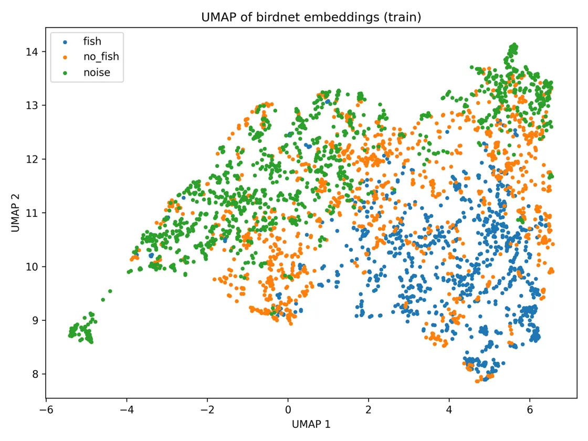
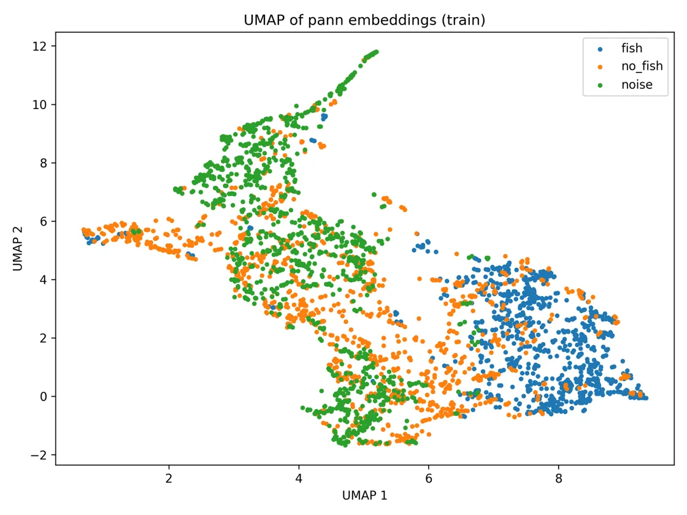
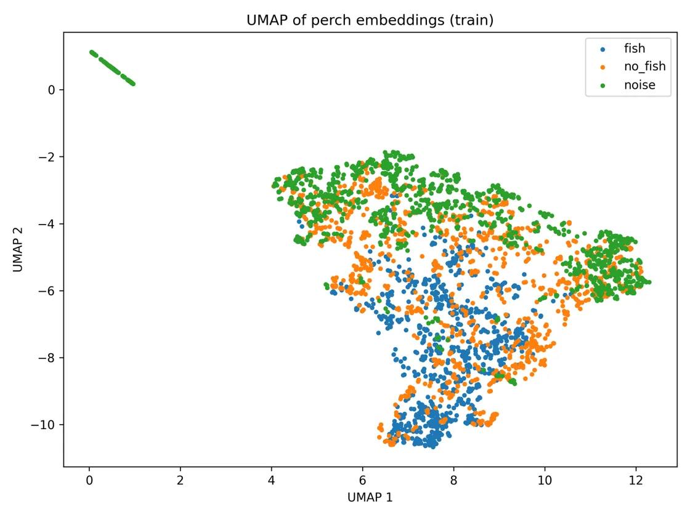
Embedding multi-modal events
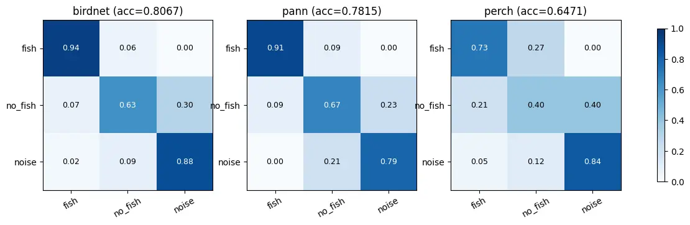
Results, cross-modal supervision
Zero-shot building footprint delineation
Additional eelgrass information
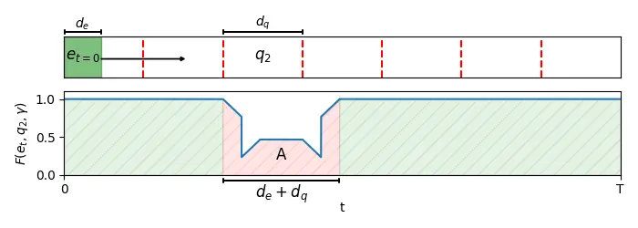
Accuracy of a one-dimensional annotation

Above ground biomass estimation


Robustness in ML for remote sensing
- Existing state-of-the art models
sensitive to pixel perturbations
- Relies on texture, context
- Not strong reliance on color
- Work published at ML4RS Workshop
at ICLR 2024

Robustness
of state-of-the-art earth observation models